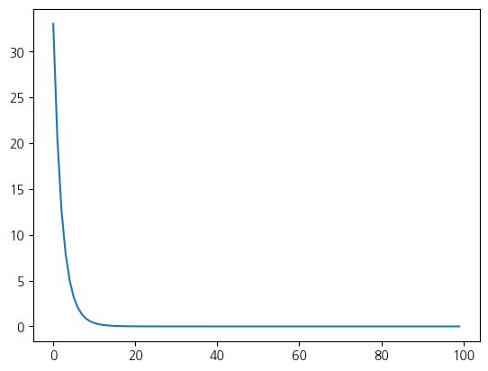
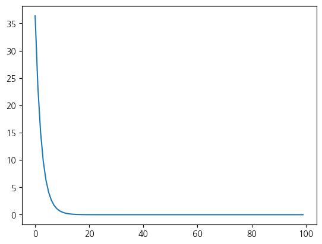

import torch
w_true = torch.Tensor([1, 2, 3])
b_true = 5
w = torch.randn(3, requires_grad = True)
b = torch.randn(1, requires_grad = True)
X = torch.randn(100, 3)
y = torch.mv(X, w_true) + b_true
gamma = 0.1
losses = []
for i in range(100):
w.grad = None
b.grad = None
y_pred = torch.mv(X, w) + b
loss = torch.mean((y- y_pred)**2)
loss.backward()
w.data = w.data - gamma * w.grad.data
b.data = b.data - gamma * b.grad.data
losses.append(loss.item())1. Linear Regresssion
1) Implementing linear regression using PyTorch
print('obtained w: ', w, 'true w:', w_true)
print('obtained b: ', b, 'true b:', b_true)obtained w: tensor([1.0000, 2.0000, 3.0000], requires_grad=True) true w: tensor([1., 2., 3.])
obtained b: tensor([5.0000], requires_grad=True) true b: 5from matplotlib import pyplot as plt
plt.plot(losses)
2) PyTorch-style code
import torch
w_true = torch.Tensor([1, 2, 3])
b_true = 5
net = torch.nn.Linear(in_features = 3, out_features = 1, bias = True)
X = torch.randn(100, 3)
y = torch.mv(X, w_true) + b_true
gamma = 0.1
losses = []
optimizer = torch.optim.SGD(net.parameters(), lr=gamma)
loss_fn = torch.nn.MSELoss()
for i in range(100):
optimizer.zero_grad()
y_pred = net(X)
loss = loss_fn(y_pred.squeeze(1),y)
loss.backward()
optimizer.step()
losses.append(loss.item())print(list(net.parameters()))
from matplotlib import pyplot as plt
plt.plot(losses)[Parameter containing:
tensor([[1.0000, 2.0000, 3.0000]], requires_grad=True), Parameter containing:
tensor([5.0000], requires_grad=True)]
2. Multi-layer perceptron
- \(y = \sigma(w_3(\sigma(w_2(\sigma(w_1x+b_1))+b_2))+ b_3)\)
- \(\sigma\) : Sigmoid, Tanh, ReLu and so on..
1) Implementing Multi-layer perceptron using PyTorch
import torch
num_data = 1000
num_epoch = 10000
x = torch.randn(num_data, 1)
y = (x**2) + 3
net = torch.nn.Sequential(
torch.nn.Linear(1,6),
torch.nn.ReLU(),
torch.nn.Linear(6, 10),
torch.nn.ReLU(),
torch.nn.Linear(10, 6),
torch.nn.ReLU(),
torch.nn.Linear(6, 1),
)
loss_func = torch.nn.MSELoss()
optimizer = torch.optim.SGD(net.parameters(), lr=0.01)
losses = []
for i in range(num_epoch):
optimizer.zero_grad()
output = net(x)
loss = loss_func(output, y)
loss.backward()
optimizer.step()
losses.append(loss.item())from matplotlib import pyplot as plt
plt.plot(losses)
x = torch.randn(5, 1)
y = (x**2) + 3
y_pred = net(x)
print(y)
print(y_pred)tensor([[3.1069],
[3.6161],
[3.0239],
[3.0206],
[3.0046]])
tensor([[3.1685],
[3.6404],
[3.0821],
[2.9325],
[3.0386]], grad_fn=<AddmmBackward0>)3. CNN
1) CNN implementation in PyTorch
import torch
import torch.nn
class MyCNN(torch.nn.Module):
def __init__(self):
super().__init__()
self.layer = torch.nn.Sequential(
torch.nn.Conv2d(1, 16, 5),
torch.nn.ReLU(),
torch.nn.Conv2d(16, 32, 5),
torch.nn.MaxPool2d(2, 2),
torch.nn.Conv2d(32, 64, 5),
torch.nn.ReLU(),
torch.nn.MaxPool2d(2,2)
)
self.fc_layer = torch.nn.Sequential(
torch.nn.Linear(64*52*52, 100),
torch.nn.ReLU(),
torch.nn.Linear(100, 10)
)
def forward(self, x):
out = self.layer(x)
out = out.view(out.size(0), -1)
out = self.fc_layer(out)
return outimport numpy as np
num_data = 1000
num_epoch = 10
x = torch.randn(num_data,1, 224,224)
y = torch.tensor(np.random.choice([0,1], 1000), dtype = torch.long)
net = MyCNN()
loss_func = torch.nn.CrossEntropyLoss()
optimizer = torch.optim.SGD(net.parameters(), lr=0.01)
losses = []
for i in range(num_epoch):
optimizer.zero_grad()
output = net(x)
loss = loss_func(output, y)
loss.backward()
optimizer.step()
losses.append(loss.item())## Cross entropy loss
import torch.nn as nn
loss = nn.CrossEntropyLoss()
input = torch.randn(3, 5, requires_grad=True)
target = torch.empty(3, dtype=torch.long).random_(5)
output = loss(input, target)
print(input)
print(target)
print(output)tensor([[-1.6207, 0.8775, 1.0726, 0.0215, 2.0341],
[-0.2897, 1.6222, 0.3694, 2.3245, -0.9064],
[-0.2044, -2.1951, -2.7583, -0.3929, 1.6202]], requires_grad=True)
tensor([3, 3, 3])
tensor(1.8295, grad_fn=<NllLossBackward0>)2)Stochastic Gradient Descent
- Gradient descent
- Calculate for all data
- Go 1 optimal step
- Stochastic gradient descent
- Calcultate gradients for partial data
- Go many non-globally-optimal steps, but converges

3) LeNet
import numpy as np
import torch
import torch.nn as nn
from torch.utils.data import DataLoader
from torchvision import datasets, transforms
import matplotlib.pyplot as plt
LEARNING_RATE = 0.001
BATCH_SIZE = 32
N_EPOCHS = 10
IMG_SIZE = 32
N_CLASSES = 10class LeNet5(nn.Module):
def __init__(self, n_classes):
super(LeNet5, self).__init__()
self.feature_extractor = nn.Sequential(
nn.Conv2d(in_channels=1, out_channels=6, kernel_size=5, stride=1),
nn.Tanh(),
nn.AvgPool2d(kernel_size=2, stride=2),
nn.Conv2d(in_channels=6, out_channels=16, kernel_size=5, stride=1),
nn.Tanh(),
nn.AvgPool2d(kernel_size=2, stride=2),
nn.Conv2d(in_channels=16, out_channels=120, kernel_size=5, stride=1),
nn.Tanh()
)
self.classifier = nn.Sequential(
nn.Linear(in_features=120, out_features=84),
nn.Tanh(),
nn.Linear(in_features=84, out_features=n_classes),
)
def forward(self, x):
x = self.feature_extractor(x)
x = torch.flatten(x, 1)
x = self.classifier(x)
return xtrans = transforms.Compose([transforms.Resize((32, 32)), transforms.ToTensor()])
train_dataset = datasets.MNIST(root = 'mnist_data', train=True, transform=trans, download=True)
test_dataset = datasets.MNIST(root = 'mnist_data', train=False, transform=trans)
train_loader = DataLoader(dataset=train_dataset, batch_size=BATCH_SIZE, shuffle=True)
test_loader = DataLoader(dataset=test_dataset, batch_size=BATCH_SIZE, shuffle=False)Downloading http://yann.lecun.com/exdb/mnist/train-images-idx3-ubyte.gz
Failed to download (trying next):
HTTP Error 404: Not Found
Downloading https://ossci-datasets.s3.amazonaws.com/mnist/train-images-idx3-ubyte.gz
Downloading https://ossci-datasets.s3.amazonaws.com/mnist/train-images-idx3-ubyte.gz to mnist_data/MNIST/raw/train-images-idx3-ubyte.gz100%|████████████████████████████████████████████████████████████████████| 9912422/9912422 [00:02<00:00, 3449235.73it/s]Extracting mnist_data/MNIST/raw/train-images-idx3-ubyte.gz to mnist_data/MNIST/raw
Downloading http://yann.lecun.com/exdb/mnist/train-labels-idx1-ubyte.gz
Failed to download (trying next):
HTTP Error 404: Not Found
Downloading https://ossci-datasets.s3.amazonaws.com/mnist/train-labels-idx1-ubyte.gz
Downloading https://ossci-datasets.s3.amazonaws.com/mnist/train-labels-idx1-ubyte.gz to mnist_data/MNIST/raw/train-labels-idx1-ubyte.gz100%|█████████████████████████████████████████████████████████████████████████| 28881/28881 [00:00<00:00, 156533.97it/s]Extracting mnist_data/MNIST/raw/train-labels-idx1-ubyte.gz to mnist_data/MNIST/raw
Downloading http://yann.lecun.com/exdb/mnist/t10k-images-idx3-ubyte.gz
Failed to download (trying next):
HTTP Error 404: Not Found
Downloading https://ossci-datasets.s3.amazonaws.com/mnist/t10k-images-idx3-ubyte.gz
Downloading https://ossci-datasets.s3.amazonaws.com/mnist/t10k-images-idx3-ubyte.gz to mnist_data/MNIST/raw/t10k-images-idx3-ubyte.gz100%|████████████████████████████████████████████████████████████████████| 1648877/1648877 [00:01<00:00, 1194631.91it/s]Extracting mnist_data/MNIST/raw/t10k-images-idx3-ubyte.gz to mnist_data/MNIST/raw
Downloading http://yann.lecun.com/exdb/mnist/t10k-labels-idx1-ubyte.gz
Failed to download (trying next):
HTTP Error 404: Not Found
Downloading https://ossci-datasets.s3.amazonaws.com/mnist/t10k-labels-idx1-ubyte.gz
Downloading https://ossci-datasets.s3.amazonaws.com/mnist/t10k-labels-idx1-ubyte.gz to mnist_data/MNIST/raw/t10k-labels-idx1-ubyte.gz100%|██████████████████████████████████████████████████████████████████████████| 4542/4542 [00:00<00:00, 6453431.15it/s]Extracting mnist_data/MNIST/raw/t10k-labels-idx1-ubyte.gz to mnist_data/MNIST/raw
A) GPU이용 x
def train(train_loader, model, criterion, optimizer):
model.train()
train_loss = 0
correct = 0
for X, y_true in train_loader:
optimizer.zero_grad()
y_hat = model(X)
loss = criterion(y_hat, y_true)
train_loss += loss.item()
pred = y_hat.argmax(dim=1, keepdim=True)
correct += pred.eq(y_true.view_as(pred)).sum().item()
loss.backward()
optimizer.step()
epoch_loss = train_loss / len(train_loader.dataset)
acc = correct / len(train_loader.dataset)
return model, optimizer, epoch_loss, accdef test(test_loader, model, criterion):
model.eval()
test_loss = 0
correct = 0
for X, y_true in test_loader:
y_hat = model(X)
loss = criterion(y_hat, y_true)
test_loss += loss.item()
pred = y_hat.argmax(dim=1, keepdim=True)
correct += pred.eq(y_true.view_as(pred)).sum().item()
epoch_loss = test_loss / len(test_loader.dataset)
acc = correct / len(test_loader.dataset)
return model, epoch_loss, accdef training_loop(model, criterion, optimizer, train_loader, test_loader, epochs, print_every=1):
train_losses = []
test_losses = []
for epoch in range(epochs):
model, optimizer, train_loss, train_acc = train(train_loader, model, criterion, optimizer)
train_losses.append(train_loss)
with torch.no_grad():
model, test_loss, test_acc = test(test_loader, model, criterion)
test_losses.append(test_loss)
if epoch % print_every == (print_every - 1):
print(f'Epoch: {epoch}\t'
f'Train loss: {train_loss:.4f}\t'
f'Test loss: {test_loss:.4f}\t'
f'Train accuracy: {100 * train_acc:.2f}\t'
f'Test accuracy: {100 * test_acc:.2f}')
return model, optimizer, (train_losses, test_losses)model = LeNet5(N_CLASSES)
optimizer = torch.optim.SGD(model.parameters(), lr=LEARNING_RATE)
criterion = nn.CrossEntropyLoss()
model, optimizer, _ = training_loop(model, criterion, optimizer, train_loader, test_loader, N_EPOCHS)Epoch: 0 Train loss: 0.0718 Test loss: 0.0717 Train accuracy: 11.12 Test accuracy: 11.44
Epoch: 1 Train loss: 0.0712 Test loss: 0.0707 Train accuracy: 15.21 Test accuracy: 31.99
Epoch: 2 Train loss: 0.0689 Test loss: 0.0660 Train accuracy: 49.09 Test accuracy: 62.09
Epoch: 3 Train loss: 0.0583 Test loss: 0.0482 Train accuracy: 61.26 Test accuracy: 64.36
Epoch: 4 Train loss: 0.0396 Test loss: 0.0317 Train accuracy: 67.64 Test accuracy: 73.92
Epoch: 5 Train loss: 0.0275 Test loss: 0.0235 Train accuracy: 77.19 Test accuracy: 81.42
Epoch: 6 Train loss: 0.0216 Test loss: 0.0192 Train accuracy: 82.31 Test accuracy: 84.22
Epoch: 7 Train loss: 0.0183 Test loss: 0.0166 Train accuracy: 84.57 Test accuracy: 86.17
Epoch: 8 Train loss: 0.0162 Test loss: 0.0149 Train accuracy: 86.02 Test accuracy: 87.38
Epoch: 9 Train loss: 0.0147 Test loss: 0.0136 Train accuracy: 87.18 Test accuracy: 88.43B) GPU 이용
def train(train_loader, model, criterion, optimizer, device):
model.train()
train_loss = 0
correct = 0
for X, y_true in train_loader:
optimizer.zero_grad()
X = X.to(device)
y_true = y_true.to(device)
y_hat = model(X)
loss = criterion(y_hat, y_true)
train_loss += loss.item()
pred = y_hat.argmax(dim=1, keepdim=True)
correct += pred.eq(y_true.view_as(pred)).sum().item()
loss.backward()
optimizer.step()
epoch_loss = train_loss / len(train_loader.dataset)
acc = correct / len(train_loader.dataset)
return model, optimizer, epoch_loss, accdef test(test_loader, model, criterion, device):
model.eval()
test_loss = 0
correct = 0
for X, y_true in test_loader:
X = X.to(device)
y_true = y_true.to(device)
y_hat = model(X)
loss = criterion(y_hat, y_true)
test_loss += loss.item()
pred = y_hat.argmax(dim=1, keepdim=True)
correct += pred.eq(y_true.view_as(pred)).sum().item()
epoch_loss = test_loss / len(test_loader.dataset)
acc = correct / len(test_loader.dataset)
return model, epoch_loss, accdef training_loop(model, criterion, optimizer, train_loader, test_loader, epochs, device, print_every=1):
train_losses = []
test_losses = []
for epoch in range(epochs):
model, optimizer, train_loss, train_acc = train(train_loader, model, criterion, optimizer, device)
train_losses.append(train_loss)
with torch.no_grad():
model, test_loss, test_acc = test(test_loader, model, criterion, device)
test_losses.append(test_loss)
if epoch % print_every == (print_every - 1):
print(f'Epoch: {epoch}\t'
f'Train loss: {train_loss:.4f}\t'
f'Test loss: {test_loss:.4f}\t'
f'Train accuracy: {100 * train_acc:.2f}\t'
f'Test accuracy: {100 * test_acc:.2f}')
return model, optimizer, (train_losses, test_losses)DEVICE = "cuda" if torch.cuda.is_available() else "cpu"
DEVICE'cuda'model = LeNet5(N_CLASSES).to(DEVICE)
optimizer = torch.optim.SGD(model.parameters(), lr=LEARNING_RATE)
criterion = nn.CrossEntropyLoss()
model, optimizer, _ = training_loop(model, criterion, optimizer, train_loader, test_loader, N_EPOCHS, DEVICE)Epoch: 0 Train loss: 0.0717 Test loss: 0.0715 Train accuracy: 12.12 Test accuracy: 24.27
Epoch: 1 Train loss: 0.0707 Test loss: 0.0696 Train accuracy: 35.98 Test accuracy: 40.96
Epoch: 2 Train loss: 0.0659 Test loss: 0.0596 Train accuracy: 46.88 Test accuracy: 53.71
Epoch: 3 Train loss: 0.0504 Test loss: 0.0404 Train accuracy: 60.58 Test accuracy: 69.89
Epoch: 4 Train loss: 0.0336 Test loss: 0.0276 Train accuracy: 74.09 Test accuracy: 79.12
Epoch: 5 Train loss: 0.0245 Test loss: 0.0213 Train accuracy: 81.22 Test accuracy: 83.96
Epoch: 6 Train loss: 0.0199 Test loss: 0.0178 Train accuracy: 84.45 Test accuracy: 86.18
Epoch: 7 Train loss: 0.0171 Test loss: 0.0156 Train accuracy: 86.00 Test accuracy: 87.37
Epoch: 8 Train loss: 0.0153 Test loss: 0.0141 Train accuracy: 87.15 Test accuracy: 88.03
Epoch: 9 Train loss: 0.0140 Test loss: 0.0130 Train accuracy: 87.95 Test accuracy: 88.874) ResNet
- Use network layers to fit a residual mapping instead of directly trying to fit a desired underlying mapping

def conv_block_1(in_dim,out_dim,act_fn):
model = nn.Sequential(
nn.Conv2d(in_dim,out_dim, kernel_size=1, stride=1),
act_fn,
)
return model
def conv_block_1_stride_2(in_dim,out_dim,act_fn):
model = nn.Sequential(
nn.Conv2d(in_dim,out_dim, kernel_size=1, stride=2),
act_fn,
)
return model
def conv_block_1_n(in_dim,out_dim):
model = nn.Sequential(
nn.Conv2d(in_dim,out_dim, kernel_size=1, stride=1),
)
return model
def conv_block_1_stride_2_n(in_dim,out_dim):
model = nn.Sequential(
nn.Conv2d(in_dim,out_dim, kernel_size=1, stride=2),
)
return model
def conv_block_3(in_dim,out_dim,act_fn):
model = nn.Sequential(
nn.Conv2d(in_dim,out_dim, kernel_size=3, stride=1, padding=1),
act_fn,
)
return modelclass BottleNeck(nn.Module):
def __init__(self,in_dim,mid_dim,out_dim,act_fn):
super(BottleNeck,self).__init__()
self.layer = nn.Sequential(
conv_block_1(in_dim,mid_dim,act_fn),
conv_block_3(mid_dim,mid_dim,act_fn),
conv_block_1_n(mid_dim,out_dim),
)
self.downsample = nn.Conv2d(in_dim,out_dim,1,1)
def forward(self,x):
downsample = self.downsample(x)
out = self.layer(x)
out = out + downsample
return out
class BottleNeck_no_down(nn.Module):
def __init__(self,in_dim,mid_dim,out_dim,act_fn):
super(BottleNeck_no_down,self).__init__()
self.layer = nn.Sequential(
conv_block_1(in_dim,mid_dim,act_fn),
conv_block_3(mid_dim,mid_dim,act_fn),
conv_block_1_n(mid_dim,out_dim),
)
def forward(self,x):
out = self.layer(x)
out = out + x
return outclass BottleNeck_stride(nn.Module):
def __init__(self,in_dim,mid_dim,out_dim,act_fn):
super(BottleNeck_stride,self).__init__()
self.layer = nn.Sequential(
conv_block_1_stride_2(in_dim,mid_dim,act_fn),
conv_block_3(mid_dim,mid_dim,act_fn),
conv_block_1_n(mid_dim,out_dim),
)
self.downsample = nn.Conv2d(in_dim,out_dim,1,2)
def forward(self,x):
downsample = self.downsample(x)
out = self.layer(x)
out = out + downsample
return outclass ResNet(nn.Module):
def __init__(self, base_dim, num_classes=2):
super(ResNet, self).__init__()
self.act_fn = nn.ReLU()
self.layer_1 = nn.Sequential(
nn.Conv2d(3,base_dim,7,2,3),
nn.ReLU(),
nn.MaxPool2d(3,2,1),
)
self.layer_2 = nn.Sequential(
BottleNeck(base_dim,base_dim,base_dim*4,self.act_fn),
BottleNeck_no_down(base_dim*4,base_dim,base_dim*4,self.act_fn),
BottleNeck_stride(base_dim*4,base_dim,base_dim*4,self.act_fn),
)
self.layer_3 = nn.Sequential(
BottleNeck(base_dim*4,base_dim*2,base_dim*8,self.act_fn),
BottleNeck_no_down(base_dim*8,base_dim*2,base_dim*8,self.act_fn),
BottleNeck_no_down(base_dim*8,base_dim*2,base_dim*8,self.act_fn),
BottleNeck_stride(base_dim*8,base_dim*2,base_dim*8,self.act_fn),
)
self.layer_4 = nn.Sequential(
BottleNeck(base_dim*8,base_dim*4,base_dim*16,self.act_fn),
BottleNeck_no_down(base_dim*16,base_dim*4,base_dim*16,self.act_fn),
BottleNeck_no_down(base_dim*16,base_dim*4,base_dim*16,self.act_fn),
BottleNeck_no_down(base_dim*16,base_dim*4,base_dim*16,self.act_fn),
BottleNeck_no_down(base_dim*16,base_dim*4,base_dim*16,self.act_fn),
BottleNeck_stride(base_dim*16,base_dim*4,base_dim*16,self.act_fn),
)
self.layer_5 = nn.Sequential(
BottleNeck(base_dim*16,base_dim*8,base_dim*32,nn.ReLU()),
BottleNeck_no_down(base_dim*32,base_dim*8,base_dim*32,self.act_fn),
BottleNeck(base_dim*32,base_dim*8,base_dim*32,self.act_fn),
)
self.avgpool = nn.AvgPool2d(7,1)
self.fc_layer = nn.Linear(base_dim*32,num_classes)
def forward(self, x):
out = self.layer_1(x)
out = self.layer_2(out)
out = self.layer_3(out)
out = self.layer_4(out)
out = self.layer_5(out)
out = self.avgpool(out)
out = out.view(batch_size,-1)
out = self.fc_layer(out)
return out